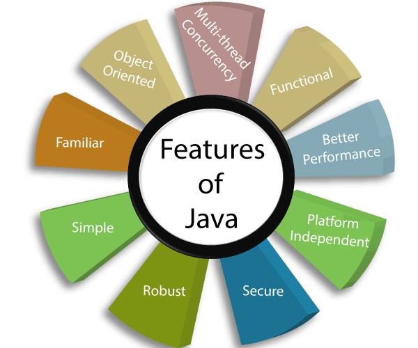

From Novice to Expert: A Thorough Guide to Full
Stack Development with Java and Data Structures

Features of Java Explained
What is Java?
What is a Full Stack Developer?
Java is an object-oriented language that encourages code
reuse and modularity. Its platform independence allows
Java code to run on any platform with a Java Virtual Machine (JVM).
With robust memory management, exception handling, and a security manager,
Java ensures secure and efficient coding
Java is a widely-used, object-oriented programming language. It’s known for its “write once,
run anywhere” capability, meaning it can run on any device that has a
Java Virtual Machine (JVM). Java also offers robust security
features, making it a popular choice for web and application development
A Full Stack Developer is a professional who can handle all the work of databases, servers, systems engineering, and clients. They are proficient in both front-end and back-end languages, as well as in server, network, and hosting environments. Essentially,
they are capable of overseeing all aspects of a project from start to finish
What is Data Structure and Algorithm?
How to build logic in programming?
Database Developer Salary in 2023
Data Structures are a way of organizing and storing data
so that they can be accessed and worked with efficiently.
Algorithms, on the other hand, are a set of steps or rules
to solve a particular problem. Together, they form the
foundation of programming,enabling efficient problem-solving
and optimization in code.
Building logic in programming involves understanding the problem, breaking it down into smaller tasks,
and implementing solutions for each task. It requires practice to translate real-world scenarios into code.
Remember, there’s often more than one way to solve a problem in programming
In 2023, the average salary for a Database Developer in India is approximately ₹612,6561. In the US,
the average total compensation for a Database Developer
is around $111,881